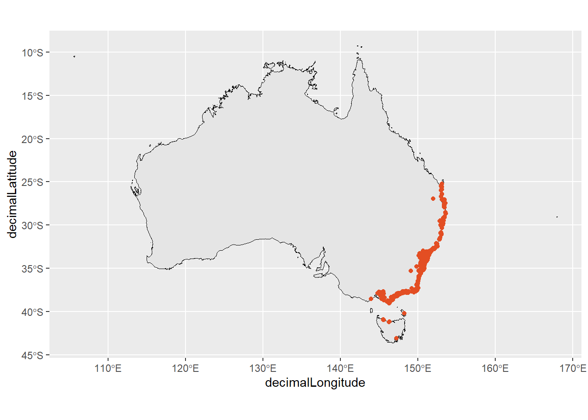
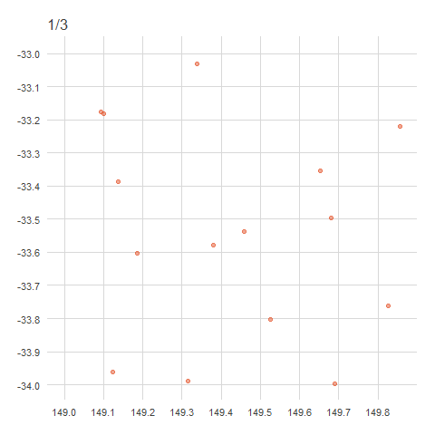
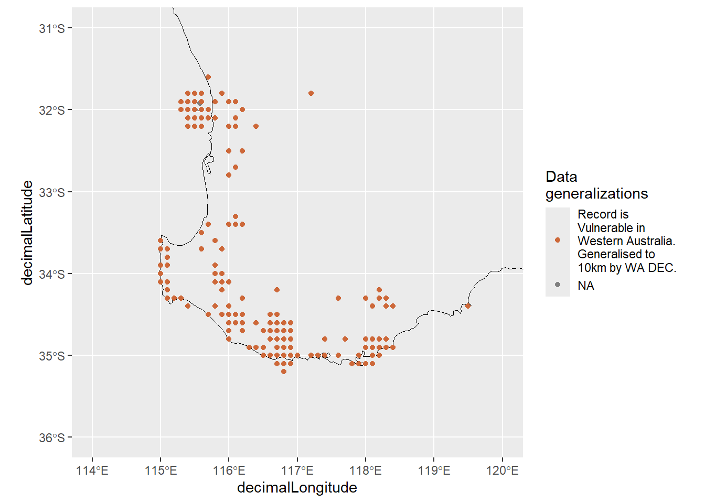

# packages
library(galah)
library(dplyr)
galah_config(email = "your-email-here") # ALA-registered email
banksia <- galah_call() |>
filter(doi == "https://doi.org/10.26197/ala.a9e533d5-6213-49a2-8136-6e397cb4fe46") |>
atlas_occurrences()
quokkas <- galah_call() |>
filter(doi == "https://doi.org/10.26197/ala.b1e384c3-3a2f-4e8b-9216-c36def11b073") |>
atlas_occurrences()9 Geospatial investigation
An important part of observational data is the location, specifying where each observation of an organism or species took place. These locations can range from locality descriptions (e.g. “Near Tellera Hill station”) to exact longitude and latitude coordinates tracked by a GPS system. The accuracy of these geospatial data will determine the types of ecological analyses you can perform. It is important to know the precision of these observations, along with the range of uncertainty around an observation’s location, to contextualize any findings or conclusions made using the data.
In this chapter, we will discuss some different ways to assess the precision and uncertainty of coordinates associated with occurrence records, and highlight how to identify spatial characteristics or errors when visualizing occurrences on maps.
9.0.1 Prerequisites
In this chapter we’ll use data of Banksia serrata occurrence records since 2022 and quokka occurrence records from the ALA.


ImportantUsing “Assertions”
To check data quality, data infrastructures like the Atlas of Living Australia have assertions—data quality tests that data infrastructures use to flag when a record has an issue. The results of these assertions are saved in assertions columns that can be accessed by users if they would like them.
If we use galah to download records, we can add assertions columns to our query to help identify and clean suspicious records.
If you would like to view assertions, use show_all().
assertions <- show_all(assertions)
assertions |>
print(n = 7)# A tibble: 124 × 4
id description category type
<chr> <chr> <chr> <chr>
1 AMBIGUOUS_COLLECTION Ambiguous collection Comment assertio…
2 AMBIGUOUS_INSTITUTION Ambiguous institution Comment assertio…
3 BASIS_OF_RECORD_INVALID Basis of record badly formed Warning assertio…
4 biosecurityIssue Biosecurity issue Error assertio…
5 COLLECTION_MATCH_FUZZY Collection match fuzzy Comment assertio…
6 COLLECTION_MATCH_NONE Collection not matched Comment assertio…
7 CONTINENT_COORDINATE_MISMATCH continent coordinate mismatch Warning assertio…
# ℹ 117 more rowsYou can use the stringr package to search for text matches.
assertions |>
filter(str_detect(id, "COORDINATE")) |>
print(n = 5)# A tibble: 17 × 4
id description category type
<chr> <chr> <chr> <chr>
1 CONTINENT_COORDINATE_MISMATCH continent coordinate mismat… Warning asse…
2 CONTINENT_DERIVED_FROM_COORDINATES Continent derived from coor… Warning asse…
3 COORDINATE_INVALID Coordinate invalid Warning asse…
4 COORDINATE_OUT_OF_RANGE Coordinates are out of rang… Warning asse…
5 COORDINATE_PRECISION_INVALID Coordinate precision invalid Warning asse…
# ℹ 12 more rowsIn this chapter, we will detail when an assertion column can help identify occurrence records with geospatial issues.
9.1 Quick visualisation
Mentioned in the Inspect chapter, one of the most straightforward ways to check for spatial errors is to plot your data onto a map. More obvious spatial errors are much easier to spot visually.
In most spatial datasets, the most important columns are decimalLatitude and decimalLongitude (or similarly named columns). These contain the latitude and longitude of each observation in decimal form (rather than degrees).
# Retrieve map of Australia
aus <- st_transform(ozmap_country, 4326)
# A quick plot of banksia occurrences
ggplot() +
geom_sf(data = aus, colour = "black") +
geom_point(data = banksia,
aes(x = decimalLongitude,
y = decimalLatitude),
colour = "#e34e23")Warning: Removed 1 row containing missing values or values outside the scale range
(`geom_point()`).
In a quick glance, we can check whether there are any records in places that they shouldn’t be. Are there records in the ocean? Are there records in states/territories where our species definitely doesn’t live? Is the data too sparse to use for our expected analysis plan?
Lucky for us, the banksia data we just plotted doesn’t seem to have any glaring issues, though you might notice some stray points in Tasmania and inland Australia that deserve some additional interrogating!
9.2 Precision
Not all observations have the same degree of precision. Coordinate precision can vary between data sources and recording equipment. For example, coordinates recorded with a GPS unit or a phone generally have higher precision than coordinates recorded manually from a locality description.
The degree of precision you require will depend on the granularity of your research question and analysis. A fine-scale question will require data measured at a fine-scale to answer it. National or global scale questions require less precise data.
When downloading data from the ALA with the galah package, it’s possible to include the coordinatePrecision field with your data; this provides a decimal representation of the precision of coordinates for each observation.
banksia |>
select(scientificName,
coordinatePrecision
) |>
filter(!is.na(coordinatePrecision))- 1
-
Not all records have this information recorded, so we also filter to only records with a
coordinatePrecisionvalue.
# A tibble: 227 × 2
scientificName coordinatePrecision
<chr> <dbl>
1 Banksia serrata 0.000000001
2 Banksia serrata 0.000000001
3 Banksia serrata 0.000000001
4 Banksia serrata 0.000000001
5 Banksia serrata 0.000000001
6 Banksia serrata 0.000000001
7 Banksia serrata 0.000000001
8 Banksia serrata 0.000000001
9 Banksia serrata 0.000000001
10 Banksia serrata 0.000000001
# ℹ 217 more rowsOnly a few records have coordinatePrecision recorded, but that subset of records are very precise.
banksia |>
group_by(coordinatePrecision) |>
count()# A tibble: 2 × 2
# Groups: coordinatePrecision [2]
coordinatePrecision n
<dbl> <int>
1 0.000000001 227
2 NA 1506Filter your records to only those under a specific measure of precision.
# Filter by number of decimal places
banksia <- banksia |>
filter(coordinatePrecision <= 0.001)9.3 Uncertainty
Uncertainty is a measure of how different an unknown true value might be from a given value. In georeferencing, we use uncertainty to refer to the maximum distance from a georeferenced coordinate to the furthest point where the true location might be. This uncertainty value is a combination of all the possible sources of error given as a distance (Chapman and Wieczorek 2020), taking into account issues like an unknown coordinate projection, derived geocoordinates (e.g., using geocoordinates for a described town or creek) or any uncertainty around an observation’s specific location.
An additional factor that can affect the uncertainty of a geocoordinate is the practice of obfuscation—using standard methods to hide the original location of a record. This is discussed more in the next section. Although adding uncertainty to data is important for protecting individual species, uncertainty inevitably affects how robust the results from species distribution models are, so it is important to be aware of location uncertainty.
When downloading data from the ALA with the galah package, it’s possible to include the coordinateUncertaintyInMeters field with your data. We added this column in our original galah query.
banksia |>
select(scientificName,
coordinateUncertaintyInMeters
)# A tibble: 1,733 × 2
scientificName coordinateUncertaintyInMeters
<chr> <dbl>
1 Banksia serrata 316
2 Banksia serrata 10
3 Banksia serrata 3
4 Banksia serrata 2268
5 Banksia serrata NA
6 Banksia serrata 2036
7 Banksia serrata NA
8 Banksia serrata 4
9 Banksia serrata 5
10 Banksia serrata NA
# ℹ 1,723 more rowsThere is a range of coordinate uncertainty in our data, with many falling within 10m of uncertainty.
banksia |>
count(coordinateUncertaintyInMeters) # A tibble: 270 × 2
coordinateUncertaintyInMeters n
<dbl> <int>
1 1 6
2 2 27
3 3 108
4 4 274
5 5 122
6 6 30
7 7 28
8 8 47
9 9 37
10 10 124
# ℹ 260 more rowsIf your analysis requires greater certainty, you can then filter your records to a smaller area of uncertainty.
# Filter by number of decimal places
banksia <- banksia |>
filter(coordinateUncertaintyInMeters <= 5)9.4 Obfuscated locations
Some species observations are classified as restricted access or sensitive, meaning that information about these species and where they are located is restricted for some reason (e.g., subject to poaching or misuse, privacy concerns, or economically important species records of biosecurity species eradications). Occurrence records of sensitive species may be deliberately obfuscated—have their locations generalised or randomised—to protect the true locations of these species. Although increasing uncertainty makes these data more difficult to work with, obfuscation helps to avoid risks like poaching or capture while still allowing these species’ data to be included in broader summaries.
There are a couple of ways to obfuscate locations, either by randomisation or generalisation. Generalisation, the method used by the ALA, involves the removal of decimal points from decimal coordinates, rounded to distances of 1km, 10km or 50km (in accordance with state/territory policies)1. This effectively ‘snaps’ any point within a grid cell to a corner of that cell.
NoteHow does generalisation work?
When points are generalised, all points within the same grid cell will snap to the same corner regardless of where they sit within the grid cell. In Australia, this is the north west corner, in Brazil it’s the north east corner, in China it’s the south west corner and in Europe it’s the south east corner. The animation below demonstrates how this affects data points rounded from 4 decimals (frame 1), to 2 decimals (frame 2), to 1 decimal (frame 3)2. Note that longitude values (x) are always rounded down and latitude values (y) are always rounded up to ensure all points in the grid generalise to the same corner.
Code
library(ggplot2)
library(dplyr)
library(glue)
library(ggtext)
library(gganimate)
# generate sample data
set.seed(2021)
data1 <- tibble::tibble(
id = 1:15,
x = round(runif(15, min = 149.0000, max = 149.9999), digits = 4),
y = round(runif(15, min = -33.9999, max = -33.0000), digits = 4),
phase = 1
)
data2 <- data1 |>
mutate(
x = floor(x * 100) / 100,
y = ceiling(y * 100) / 100,
phase = 2
)
data3 <- data2 |>
mutate(
x = floor(x * 10) / 10,
y = ceiling(y * 10) / 10,
phase = 3
)
data <- bind_rows(data1, data2, data3)
anim <- ggplot(data) +
geom_point(
aes(x = x, y = y),
size = 2,
alpha = .5,
colour = "#e34e23"
) +
labs(title = "Frame {closest_state}/3") +
pilot::theme_pilot() +
scale_x_continuous(
breaks = c(149, 149.1, 149.2, 149.3, 149.4, 149.5,149.6, 149.7, 149.8, 149.9, 150)
) +
scale_y_continuous(
breaks = c(-34, -33.9, -33.8, -33.7, -33.6, -33.5, -33.4, -33.3, -33.2, -33.1, -33)
) +
theme(
legend.position = "none",
axis.title.y = element_blank(),
axis.title.x = element_blank(),
axis.text.x = element_markdown(),
plot.title = element_text()
) +
transition_states(phase, transition_length = 0.05, state_length = .2) +
ease_aes('linear')
anim
For more info on the methods of generalisation (and obfuscation more broadly), see this online book on current best practices by Arthur Chapman.
In the ALA, the field dataGeneralizations indicates whether a record has been generalised and provides information on the size of the area to which the point has been generalised. The numeric distance of generalisation is also held in the column generalisationInMetres.
Including these fields in your data download is essential if you think there might be sensitive species included. Obfuscation can also impact the results of your download query, including which species are returned when searching within a specified area or polygon.
NoteNote on
dataGeneralizations
The dataGeneralizations and generalisationInMetres fields will only be available to use or download when there are records in your query that have been generalised.
search_all(fields, "dataGeneralization")# A tibble: 2 × 3
id description type
<chr> <chr> <chr>
1 dataGeneralizations Data Generalised during processing fields
2 raw_dataGeneralizations <NA> fieldsFor example, the Western Swamp Tortoise is a critically endangered species in Western Australia that is also a restricted access species. There are 132 records of this species in the ALA.
galah_call() |>
identify("Pseudemydura umbrina") |>
atlas_counts()# A tibble: 1 × 1
count
<int>
1 132Grouping record counts by the dataGeneralizations column shows that 128 of the 132 records have been obscured by 10 km.
galah_call() |>
identify("Pseudemydura umbrina") |>
group_by(dataGeneralizations) |>
atlas_counts()# A tibble: 1 × 2
dataGeneralizations count
<chr> <int>
1 Record is Critically Endangered in Western Australia. Generalised to 10… 128What do generalised data look like?
Quokka data offer a nice example of what to look for when data points have been obfuscated. When plotted, obfuscated occurrence data appear as if points were placed onto a grid 3.
# remove records with missing coordinates
quokkas <- quokkas |>
tidyr::drop_na(decimalLatitude, decimalLongitude)
# aus map
aus <- ozmap_country |> st_transform(4326)
# map quokka occurrences
ggplot() +
geom_sf(data = aus, colour = "black", fill = NA) +
geom_point(data = quokkas,
aes(x = decimalLongitude,
y = decimalLatitude,
colour = dataGeneralizations |>
str_wrap(18))) +
scale_colour_manual(values = c("sienna3", "snow4"),
guide = guide_legend(position = "bottom")) +
guides(colour = guide_legend(title = "Data\ngeneralizations")) +
xlim(114,120) +
ylim(-36,-31)Warning: Removed 11 rows containing missing values or values outside the scale range
(`geom_point()`).
Keep in mind that survey data can also appear gridded if survey locations were evenly spaced, so be sure to double check before assuming data have been obfuscated!
For more information, check out the ALA’s support article about working with threatened, migratory and sensitive species.
9.5 Summary
In this chapter, we showed some ways to investigate the geospatial coordinates of our data and determine the degree of precision or uncertainty around each data point.
In the next chapter, we’ll see examples of issues with coordinates that require correcting or removing.
Alternatively, randomisation involves placing an observation in a new location randomly within certain distance from its true location. For example iNaturalist randomises their data at a 30 km resolution prior to sharing data with the Atlas of Living Australia.↩︎
For example,
-33.9847, 149.0578→-33.98, 149.05→-33.9, 149.0.↩︎This is what actually happened—locations have been “snapped” onto a grid determined by the generalised distance.↩︎